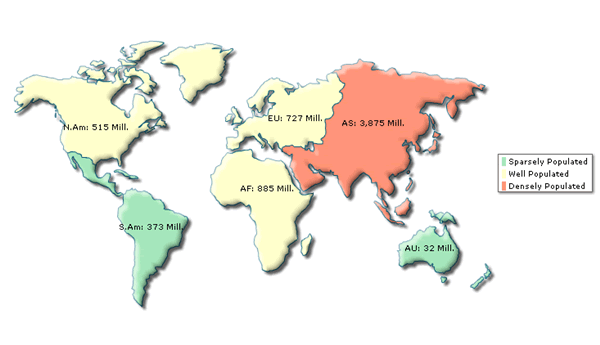

| Customizing Entity Internal Id, Short Name and Long Name | ||||||||||||||
Now that you've tasted the basic features of the map, let's cover some advanced ground and see how to change internal ids, short names and full names of the entities for any map. Consider a situation, where you've the population data stored in your database as under: |
||||||||||||||
|
||||||||||||||
|
As you can see above, your database refers to each continent using a 3 letter ID where as, FusionMaps XT refers to each continent of the world map using a 2 letter Id. If you provide dynamic data to the map using these IDs, the map will refuse to identify the IDs for the entities. Also, checking and converting each of these continent IDs into two letter IDs (that match FusionMaps XT Id) at run-time can be a Herculean coding task and difficult to maintain (as you'll be required to do this conversion every time you use this World Map). FusionMaps XT introduces a simpler and efficient way to do so.
You can, at once, re-define the IDs of all the entities of the map. Apart
from re-defining identities, you can also re-define the short name and long
name of each identity, which will later be visible on the map. |
||||||||||||||
<map borderColor='005879' fillColor='D7F4FF' numberSuffix='Mill.' includeValueInLabels='1' labelSepChar=': 'baseFontSize='9'>
<entityDef>
<entity internalId='NA' newId='NAM' sName='N.Am' lName='N. America'/>
<entity internalId='SA' newId='SAM' sName='S.Am' lName='S.America'/>
<entity internalId='EU' newId='EUR' />
<entity internalId='AS' newId='ASI' />
<entity internalId='AF' newId='AFR' />
<entity internalId='AU' newId='AUS' />
</entityDef>
<colorRange>
<color minValue='0' maxValue='500' displayValue='Sparsely Populated' color='A7E9BC' />
<color minValue='500' maxValue='1000' displayValue='Well Populated' color='FFFFCC'/>
<color minValue='1000' maxValue='5000' displayValue='Densely Populated' color='FF9377' />
</colorRange>
<data>
<entity id='NAM' value='515' />
<entity id='SAM' value='373' />
<entity id='ASI' value='3875' />
<entity id='EUR' value='727' />
<entity id='AFR' value='885' />
<entity id='AUS' value='32' />
</data>
</map> |
||||||||||||||
Here, see the <entityDef> element first. This is the element within which you can re-define the new IDs, short names and long names for each entity. Consider these lines: |
||||||||||||||
<entity internalId='NA' newId='NAM' sName='N.Am' lName='N. America'/> <entity internalId='SA' newId='SAM' sName='S.Am' lName='S. America'/> |
||||||||||||||
Here, we're telling the map to rename the existing ID of North America from NA (internal default ID) to NAM and that of South America from SA (internal ID) to SAM. We do so because our database contains the ID of these continents as NAM and SAM. So, later when we dynamically provide data to the map, we do not need to consider ID mismatches at all. We simply output them as NAM and SAM in the XML data document, as it's now handled by the map. |
||||||||||||||
| Note: When defining new IDs for different entities on the map, make sure that you're referring to the right original internal ID. Also, two entities cannot have same ID – so you need to make sure that different values are chosen for different identities. | ||||||||||||||
Going back to the code above, you'll see that we're also changing the short name of North America from existing value of NA to N.Am (for demonstration purpose). Long name is being changed to N. America. You can specify any names that you wish as short name and long name. The names can include UTF-8 characters too. Now, when you're providing data, you need to make sure that you refer to each entity by its newly defined ID (i.e., NAM for North America, SAM for South America and so on). If you refer by the old ID, the map will not be able to find such an entity and it will raise an alert. |
||||||||||||||
<entity id='NAM' value='515' /> <entity id='SAM' value='373' /> <entity id='ASI' value='3875' /> <entity id='EUR' value='727' /> <entity id='AFR' value='885' /> <entity id='AUS' value='32' /> |
||||||||||||||
If you see the map again, you'll get the following output:  |
||||||||||||||
| The abbreviated name of North America is now being shown
as "N.Am" on the map and so is the case
for South America. The rest of data isn't disturbed at all by the new
IDs - everything in place!
This completes the basic usage guide of FusionMaps XT. |